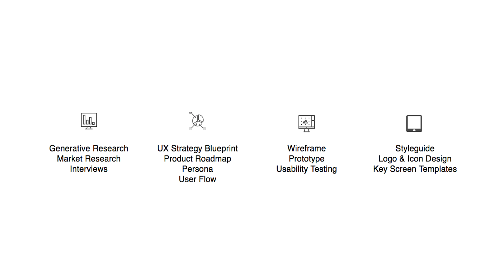
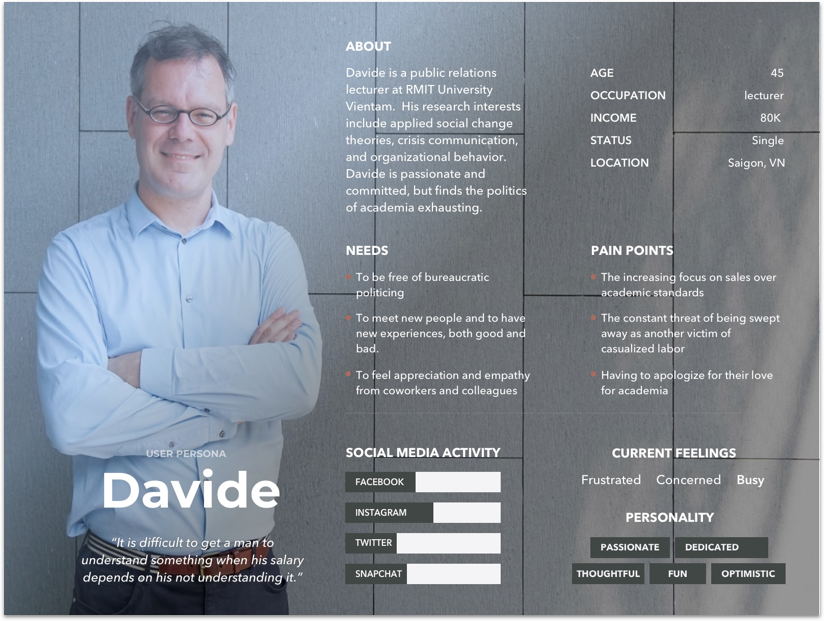
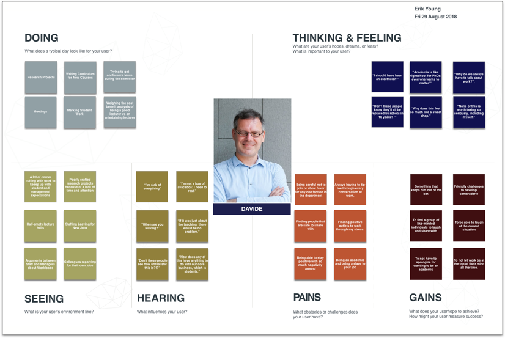
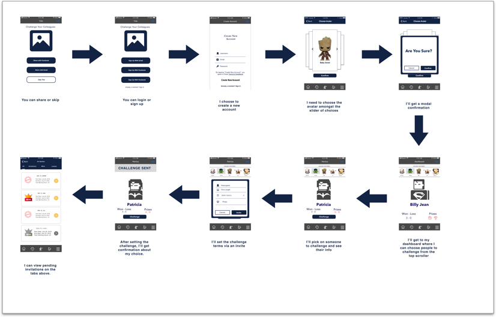
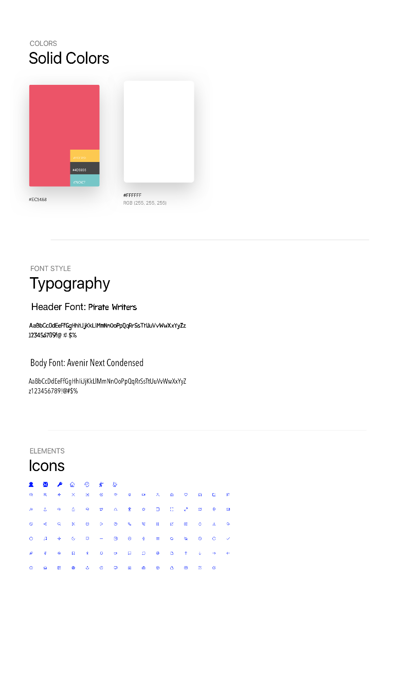

Target User
The primary users are university lecturers and professors who are looking for an easy-to-access resources to reduce work-related stress.
Goal
The primary goal of this app was to provide a type of comic relief to the day-to-day demands of work. Research showed that teachers have little ability to change their situation, but what they can do is find ways to laugh and interract with each other in order to highlight the camraderie that often comes with difficult work
My Role
UX/UI Designer & Researcher

Summary
Teacher Tussles is an app that provides a place for teachers to take out their frustrations and have a collective experience. The app is meant to be easy to use, provocative in nature, and social, so that everyone can share amongst their colleagues and peers; it is meant to serve as a resource for teachers to set aside the stresses of their job and create friendly competitions between friends.
The research for this app showed that most teachers suffer from chronic stress in some way, shape, or form. In the vast majority of cases, the stress of the job is cumulative, not cumulative or specific. In reflection of this, the findings of the research showed that we needed to design something that would allow teachers to create a digital avatar for themselves, be able to challenge each other in a flexible way, and be able to share those results amongst friends and peers if they so felt like it.
Process
Research

Research began by looking at the current scope of the problem of work-related stress for teachers. I had little knowledge of the extent of the problem, so I needed to read about what kind of information had already been uncovered. From there, I also needed to see what kind of apps or technology currently existed that addressed this issue, if at all. What I discovered was that there are a number of self-help apps for almost every industry, but there was very little that was specific to teachers; in fact, most education apps were focused on teachers doing their job better, but nothing that actually addressed the core problem of teacher wellness.
In addition, I also needed to spend considerable time understanding how gamification of behavior has been addressed in apps. Naturally, if i wanted to create such an app, I needed to look into how others have done this, what models or patterns already exist, and how it might be applied to my end goal; which in this case, was increasing wellness of teachers.
When we began the primary research phase, we inverviewed 6 people, ranging in age from 21 to 51 to get a diverse range of perspectives from people who were both new and old to the higher education sector. During the interviews, the emphasis of our discussions focused primarily around workplace stress and what condition and circumstances existed that were mitigating and aggravating factors. We also looked at things like coping behaviors and general responses to stress to get a sense of how they deal with things day to day.
As a general summary, we discovered that teachers are constantly caught between rising student expectations and unrealistic management KPIs, which seems to be vague in arbitrary in their meaning. It was also reported that growing class sizes and increased hours of teaching had made research something of a luxury, which was required for their job but often at the expense of personal responsibilities, such as childcare and time with their spouse. Suffice to say, this was a very agitated community that was looking for an outlet.
Strategy

With all this research and useful information from users, there were several personas that could have been chosen. The best thing to do then was to look at the clusters of charateristics from each of them to develop a unifying persona. Here is what came out:


From there, we began to think through two objectives: how to gamify the experience as well as how the navigation of such an experience would work. In that case, we made the navigation for it very robust so that the user could easily revert back to common points in the application while still making it easy to jump to other actvities when needed. With this solution, we’ve included choosing an avatar as part of the onboarding process. From here, users could easily view their friends and challenge them as needed.
User Flow

Interaction & UI Design

After the initial user flow and low-fidelity wireframes were complete, I did some initial usability testing to see how my peers would respond to it. What I had quickly discovered was that teachers wanted more relatable characters, each with their own unique characteristics, and they wanted to have more interaction to make them feel that this was more of a ‘battle’; they also wanted flexibility about the kinds of challenges they could engage in.
The useful feedack I made it clear that this needs to signal something that is both gamified and something of a battle. So when thinking through the color palette and the initial styling, this had to be at the forefront of my thoughts. Here is what came out:
Styleguide

High Fidelity Wireframe
Usability and Prototyping
Usability Testing confirmed our belief at this point: we had built something that made sense to the user and was easy to use. Earlly iterations of the testing were a little bit rough, but much of that was due to the fact that users were not that familiar with low-fidelity mockups of the site, so there was some basic issues with navigation. Prototyping is also an area people are not that used to as well, so getting a feel for the limitations of a site such as that was also a consideration. You can find the prototype we used here.
Reflection
Buidling this application revealed a lot of important lessons for me; of note the difference between something that might be useful versus something that is financially viable. In this case, it was clear that there is a need to have a resource for teachers to have an outlet for their stress; however, in the course of doing the research, it was clear that teacher stress and coping behaviors were not all that different than people in any other profession. So in this sense, building an application that touched specifically on the work of teachers that was in fact bankable would required a lot more time and research. My gut feeling, however, is that it is likely more trouble than it’s worth to make such an app for such a niche market. In the future, I will definitely take a closer look at the business case for such an application before undertaking the project.